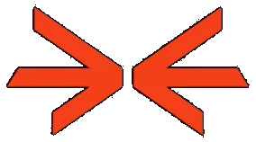

FPV და თავისუფალი ფრენა
ივარჯიშე Acro და Angle რეჟიმებში. მოარგე Betaflight rates შენს სტილს და გადართე FPV, Chase ან LOS კამერაზე.

DRONEYFLIGHT SIMULATORფრენის სიმულატორი / DESKTOP
პირველი აფრენიდან ზუსტ მანევრებამდე. გაიცანი დრონის მართვა, გაიარე რბოლის ტრასა და იპოვე შენი ფრენის სტილი DRONEY-ში.
3D მოდელი იტვირთება…
გადაათრიე — შემობრუნება · სქროლი — მოახლოება
01 / FEEL THE CONTROLS
ამოძრავე სტიკები და ნახე დრონის რეაქცია.
ეს გამარტივებული ვებდემოა; სრული სიმულატორი აპშია.
LIVE PREVIEW
სტიკის გაშვებისას დრონი თანდათან სწორდება.
მართე სლაიდერებით ან ისრებით, როცა დემო ფოკუსშია.02 / FIND YOUR FLOW
ივარჯიშე Acro და Angle რეჟიმებში. მოარგე Betaflight rates შენს სტილს და გადართე FPV, Chase ან LOS კამერაზე.
გაიარე რკალები სწორი თანმიმდევრობით. გაზომე წრის დრო, შეადარე საუკეთესოს და გააუმჯობესე შენი შედეგი.
აირჩიე DJI ტიპის დრონი Normal ან Sport რეჟიმით. ივარჯიშე პოზიციისა და სიმაღლის შენარჩუნებით და კამერის მართვით.
მდელო სოფლის სახლებით, კანიონი ნაკადულით და ზამთრის ხეობა საბაგიროთი და გაყინული ტბით. შეფრინდი სახლებში, ხეების ქვეშ და საბაგიროს გვარლებს შორის — წყალთან შეხება კი ფრენას ამთავრებს.
ყოველ ტრასას ექვსი დონე აქვს, მათ შორის ტრიუკები (power loop, split-S, Matty flip, dive) და მოძრავი დაბრკოლებები. გამოცდის რეჟიმში დონეები თანმიმდევრობით იხსნება — ჩააბარე გამოცდა და მიიღე DRONEY-ის სერთიფიკატი.
Windows-ის ინსტალერი და Linux AppImage ახალ ვერსიას თავად ჩამოტვირთავს და დახურვისას დააყენებს; macOS-ზე აპი ახალ DMG-ს შემოგთავაზებს. Portable ვერსია არ ახლდება.
03 / CONNECT & FLY
Setup-ში დააკალიბრე არხები, შეამოწმე მიმართულებები და მოირგე მართვა.
USB Joystick რეჟიმი, არხების ამოცნობა და Arm switch-ის მიბმა.
ქვედა USB-C პორტით, DUML სერიული კავშირი desktop აპში. სხვა DJI პულტებთან თავსებადობა დადასტურებული არ არის.
Xbox / PlayStation სტანდარტული mapping ან კლავიატურა. W/S — throttle, A/D — yaw, ისრები — pitch/roll.
04 / YOUR NEXT TAKEOFF
აირჩიე შენი პლატფორმა და დაიწყე ვარჯიში.
მიმდინარე პაკეტებისთვის code signing და macOS notarization კონფიგურირებული არ არის. ჩამოტვირთე მხოლოდ სანდო წყაროდან და გადაამოწმე რელიზის SHA256SUMS. Windows-ის installer ინსტალაციის ადგილს არჩევინებს; Portable ვერსიას ინსტალაცია არ სჭირდება. Linux AppImage-ს შეიძლება შესრულების უფლება დასჭირდეს.
შეარჩიე დრონის ტიპი, შეამოწმე Setup და კალიბრაცია. Space — Arm/Disarm, R — Reset, C — კამერა, M — ფრენის რეჟიმი, Esc — Setup. დაიწყე მცირე throttle-ით.